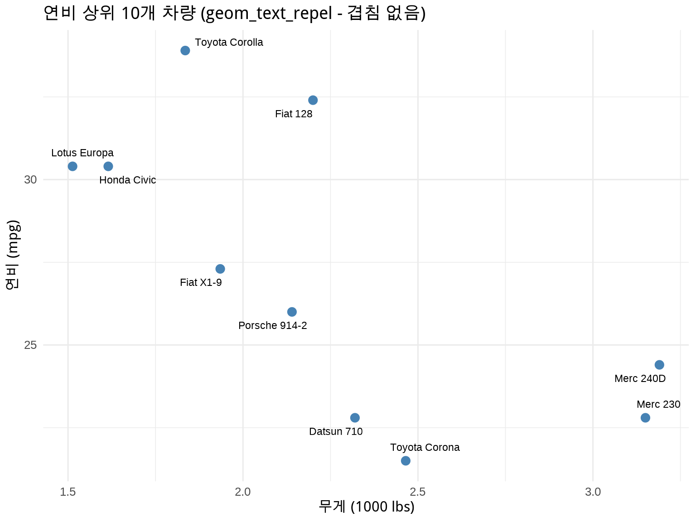
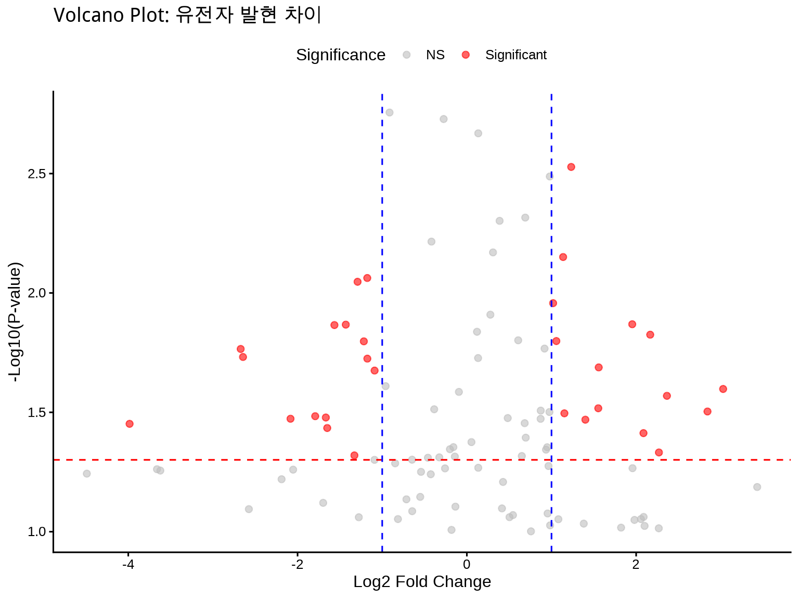
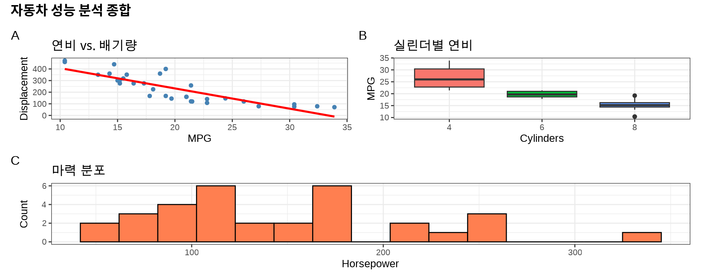
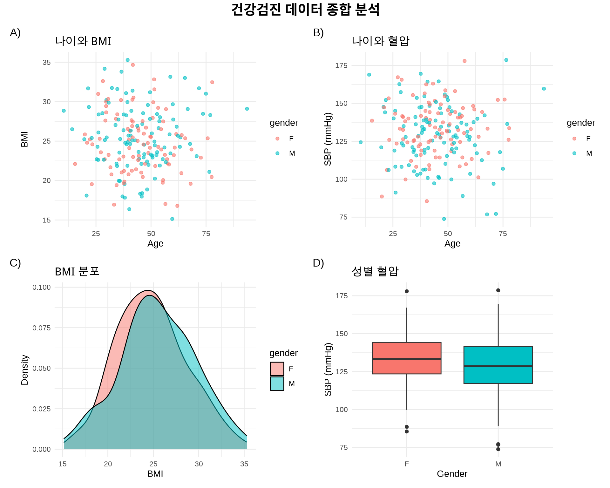
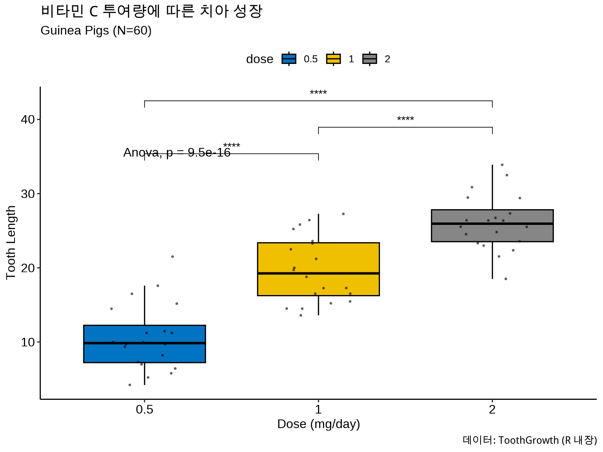
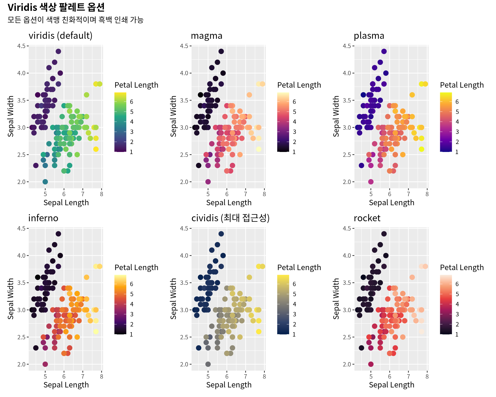

library(ggrepel)# 해결: 라벨이 자동으로 위치 조정ggplot(mtcars_labeled, aes(x =wt, y =mpg, label =model))+geom_point(color ="steelblue", size =3)+geom_text_repel( size =3, box.padding =0.5, # 라벨 주변 여백 point.padding =0.3, # 점 주변 여백 segment.color ="grey50", # 연결선 색상 max.overlaps =20# 최대 겹침 허용 수)+labs( title ="연비 상위 10개 차량 (geom_text_repel - 겹침 없음)", x ="무게 (1000 lbs)", y ="연비 (mpg)")+theme_minimal(base_size =12)

Figure 8.2: ggrepel로 해결한 텍스트 배치
8.1.3 6.1.3 실전 예제: Volcano Plot
역학 및 유전체 연구에서 자주 사용되는 volcano plot에 유의미한 유전자만 라벨링:
# 모의 유전체 데이터 생성set.seed(42)gene_data<-tibble( gene =paste0("Gene", 1:100), log2FC =rnorm(100, mean =0, sd =1.5), pvalue =runif(100, 0, 0.1))%>%mutate( neg_log10p =-log10(pvalue), significant =ifelse(abs(log2FC)>1&pvalue<0.05, "Significant", "NS"), label =ifelse(abs(log2FC)>1.5&pvalue<0.01, gene, ""))# Volcano plotggplot(gene_data, aes(x =log2FC, y =neg_log10p))+geom_point(aes(color =significant), alpha =0.6, size =2)+geom_hline(yintercept =-log10(0.05), linetype ="dashed", color ="red")+geom_vline(xintercept =c(-1, 1), linetype ="dashed", color ="blue")+geom_text_repel(aes(label =label), size =3, max.overlaps =15, box.padding =0.5)+scale_color_manual(values =c("NS"="gray", "Significant"="red"))+labs( title ="Volcano Plot: 유전자 발현 차이", x ="Log2 Fold Change", y ="-Log10(P-value)", color ="Significance")+theme_classic(base_size =12)+theme(legend.position ="top")

Figure 8.3: Volcano Plot with ggrepel (유전체 연구 스타일)
학술 논문에서는 여러 그래프를 하나의 Figure로 조합해야 합니다 (e.g., Figure 1A, 1B, 1C). patchwork 패키지는 직관적인 연산자로 이를 가능하게 합니다:
+: 나란히 또는 순서대로 배치
|: 옆으로 나란히
/: 위아래로 쌓기
(): 그룹화
기존 방법 (gridExtra, cowplot)의 문제점: - 복잡한 문법 - 축 정렬 어려움 - 라벨링 불편
patchwork의 장점: - 간결한 문법 (|, / 연산자) - 자동 축 정렬 - 자동 Figure 라벨 (A, B, C)
8.2.2 6.2.2 기본 사용법
library(patchwork)# 3개의 독립적인 플롯 생성p1<-ggplot(mtcars, aes(x =mpg, y =disp))+geom_point(color ="steelblue")+geom_smooth(method ="lm", se =FALSE, color ="red")+labs(title ="연비 vs. 배기량", x ="MPG", y ="Displacement")+theme_bw()p2<-ggplot(mtcars, aes(x =factor(cyl), y =mpg, fill =factor(cyl)))+geom_boxplot(show.legend =FALSE)+labs(title ="실린더별 연비", x ="Cylinders", y ="MPG")+theme_bw()p3<-ggplot(mtcars, aes(x =hp))+geom_histogram(bins =15, fill ="coral", color ="black")+labs(title ="마력 분포", x ="Horsepower", y ="Count")+theme_bw()# 조합: p1과 p2를 나란히, 그 아래 p3(p1|p2)/p3+plot_annotation( title ="자동차 성능 분석 종합", tag_levels ="A", # A, B, C 자동 라벨 theme =theme(plot.title =element_text(size =14, face ="bold")))

Figure 8.4: patchwork로 조합한 다중 패널 Figure
8.2.3 6.2.3 고급 레이아웃
예제 1: 복잡한 레이아웃
# 보건학 데이터 시뮬레이션set.seed(123)health_sim<-tibble( age =rnorm(200, mean =45, sd =15), bmi =rnorm(200, mean =25, sd =4), sbp =rnorm(200, mean =130, sd =20), gender =sample(c("M", "F"), 200, replace =TRUE))# 4개 플롯 생성p_age_bmi<-ggplot(health_sim, aes(x =age, y =bmi, color =gender))+geom_point(alpha =0.6)+labs(title ="나이와 BMI", x ="Age", y ="BMI")+theme_minimal()p_age_sbp<-ggplot(health_sim, aes(x =age, y =sbp, color =gender))+geom_point(alpha =0.6)+labs(title ="나이와 혈압", x ="Age", y ="SBP (mmHg)")+theme_minimal()p_bmi_dist<-ggplot(health_sim, aes(x =bmi, fill =gender))+geom_density(alpha =0.5)+labs(title ="BMI 분포", x ="BMI", y ="Density")+theme_minimal()p_sbp_box<-ggplot(health_sim, aes(x =gender, y =sbp, fill =gender))+geom_boxplot(show.legend =FALSE)+labs(title ="성별 혈압", x ="Gender", y ="SBP (mmHg)")+theme_minimal()# 레이아웃: 2x2 그리드(p_age_bmi|p_age_sbp)/(p_bmi_dist|p_sbp_box)+plot_annotation( title ="건강검진 데이터 종합 분석", tag_levels ="A", tag_suffix =")", theme =theme(plot.title =element_text(size =16, face ="bold", hjust =0.5)))

Figure 8.5: 복잡한 레이아웃 예제
예제 2: 불균등 배치 (한 플롯이 2열 차지)
# 플롯 생성p_main<-ggplot(iris, aes(x =Sepal.Length, y =Sepal.Width, color =Species))+geom_point(size =2)+labs(title ="붓꽃 꽃받침 크기", x ="Sepal Length", y ="Sepal Width")+theme_bw()p_hist_x<-ggplot(iris, aes(x =Sepal.Length, fill =Species))+geom_histogram(bins =20, alpha =0.7)+labs(title ="Sepal Length 분포")+theme_bw()+theme(legend.position ="none")p_hist_y<-ggplot(iris, aes(x =Sepal.Width, fill =Species))+geom_histogram(bins =20, alpha =0.7)+labs(title ="Sepal Width 분포")+theme_bw()+theme(legend.position ="none")# 레이아웃: p_main이 더 큰 공간 차지p_main/(p_hist_x|p_hist_y)+plot_layout(heights =c(2, 1))+# 높이 비율 2:1plot_annotation(tag_levels ="A")
library(ggpubr)# ToothGrowth 데이터: 비타민 C 투여량에 따른 치아 성장ggboxplot(ToothGrowth, x ="dose", y ="len", fill ="dose", palette ="jco", # Journal of Clinical Oncology 색상 add ="jitter", # 개별 점 추가 add.params =list(size =0.5, alpha =0.5))+stat_compare_means( comparisons =list(c("0.5", "1"), c("1", "2"), c("0.5", "2")), label ="p.signif", # *, **, *** 표시 method ="t.test")+stat_compare_means(label.y =35, method ="anova")+# 전체 ANOVAlabs( title ="비타민 C 투여량에 따른 치아 성장", subtitle ="Guinea Pigs (N=60)", x ="Dose (mg/day)", y ="Tooth Length", caption ="데이터: ToothGrowth (R 내장)")+theme_pubr()

Figure 8.9: ggpubr로 통계 정보 추가
ggpubr의 주요 함수:
# 그룹 간 비교stat_compare_means( comparisons =list(c("group1", "group2"), c("group2", "group3")), method ="t.test", # 또는 "wilcox.test", "anova" label ="p.signif"# 또는 "p.format" (숫자))# 상관관계 표시stat_cor(aes(label =paste(after_stat(rr.label), after_stat(p.label), sep ="~`,`~")), method ="pearson")
8.4 6.4 색상 접근성: 색맹 친화적 팔레트
전 세계 남성의 약 8%, 여성의 0.5%가 색맹입니다. 학술 출판에서는 색맹 친화적 색상을 사용해야 합니다.
8.4.1 6.4.1 Viridis 색상 팔레트
Viridis는 색맹 친화적이며, 흑백 인쇄에서도 구별 가능합니다.
library(viridis)# 기본 플롯base_plot<-ggplot(iris, aes(x =Sepal.Length, y =Sepal.Width, color =Petal.Length))+geom_point(size =3)+labs(x ="Sepal Length", y ="Sepal Width", color ="Petal Length")# 5가지 Viridis 옵션p_viridis<-base_plot+scale_color_viridis_c(option ="viridis")+labs(title ="viridis (default)")p_magma<-base_plot+scale_color_viridis_c(option ="magma")+labs(title ="magma")p_plasma<-base_plot+scale_color_viridis_c(option ="plasma")+labs(title ="plasma")p_inferno<-base_plot+scale_color_viridis_c(option ="inferno")+labs(title ="inferno")p_cividis<-base_plot+scale_color_viridis_c(option ="cividis")+labs(title ="cividis (최대 접근성)")p_rocket<-base_plot+scale_color_viridis_c(option ="rocket")+labs(title ="rocket")(p_viridis|p_magma|p_plasma)/(p_inferno|p_cividis|p_rocket)+plot_annotation( title ="Viridis 색상 팔레트 옵션", subtitle ="모든 옵션이 색맹 친화적이며 흑백 인쇄 가능", theme =theme(plot.title =element_text(size =14, face ="bold")))

Figure 8.10: Viridis 색상 팔레트 (색맹 친화적)
8.4.2 6.4.2 범주형 데이터: ColorBrewer
ColorBrewer는 지도학에서 개발된 색상 팔레트로, 색맹 친화성이 검증되었습니다.
library(RColorBrewer)base_plot<-ggplot(iris, aes(x =Sepal.Length, y =Sepal.Width, color =Species))+geom_point(size =3)+labs(x ="Sepal Length", y ="Sepal Width")p_set1<-base_plot+scale_color_brewer(palette ="Set1")+labs(title ="Set1")p_set2<-base_plot+scale_color_brewer(palette ="Set2")+labs(title ="Set2")p_dark2<-base_plot+scale_color_brewer(palette ="Dark2")+labs(title ="Dark2")p_paired<-base_plot+scale_color_brewer(palette ="Paired")+labs(title ="Paired")(p_set1|p_set2)/(p_dark2|p_paired)+plot_annotation( title ="ColorBrewer 팔레트 (범주형 데이터용)", theme =theme(plot.title =element_text(size =14, face ="bold")))
1. 데이터 정확성 - [ ] 모든 수치가 올바른가? - [ ] 통계 검정이 정확하게 수행되었는가? - [ ] 에러바가 SE인지 CI인지 명시했는가? - [ ] N 수를 명시했는가?
2. 시각적 요소 - [ ] 모든 축에 명확한 레이블과 단위 표시 - [ ] 글꼴 크기 적절 (최소 7pt 이상) - [ ] 색상이 색맹 친화적인가? (Viridis, ColorBrewer) - [ ] 범례가 명확하고 위치가 적절한가? - [ ] 그리드라인이 너무 많지 않은가?
3. 해상도 및 포맷 - [ ] 해상도 ≥ 300 DPI (학술지 요구사항 확인) - [ ] 파일 형식: PDF (벡터) 또는 TIFF (래스터) - [ ] 파일 크기 < 10 MB (학술지 제한 확인) - [ ] 그림 크기가 학술지 규정 준수 (single/double column)
4. 텍스트 및 라벨 - [ ] 모든 텍스트가 읽기 쉬운가? - [ ] 라벨이 겹치지 않는가? (ggrepel 사용) - [ ] Figure 캡션이 완전하고 자세한가? - [ ] 통계 정보 명시 (p-value, CI, SE)
5. 일관성 - [ ] 같은 논문 내 모든 그래프가 동일한 테마 사용 - [ ] 색상 팔레트가 일관적인가? - [ ] 글꼴과 크기가 일관적인가?
6. 접근성 - [ ] 색맹 친화적 색상 사용 - [ ] 흑백 인쇄 시에도 구별 가능한가? - [ ] 점선, 모양 등으로 추가 구별 제공
7. 윤리 및 투명성 - [ ] 데이터 출처 명시 - [ ] 통계 방법 명시 - [ ] 데이터 조작 없음 (y축 범위 조작 등)